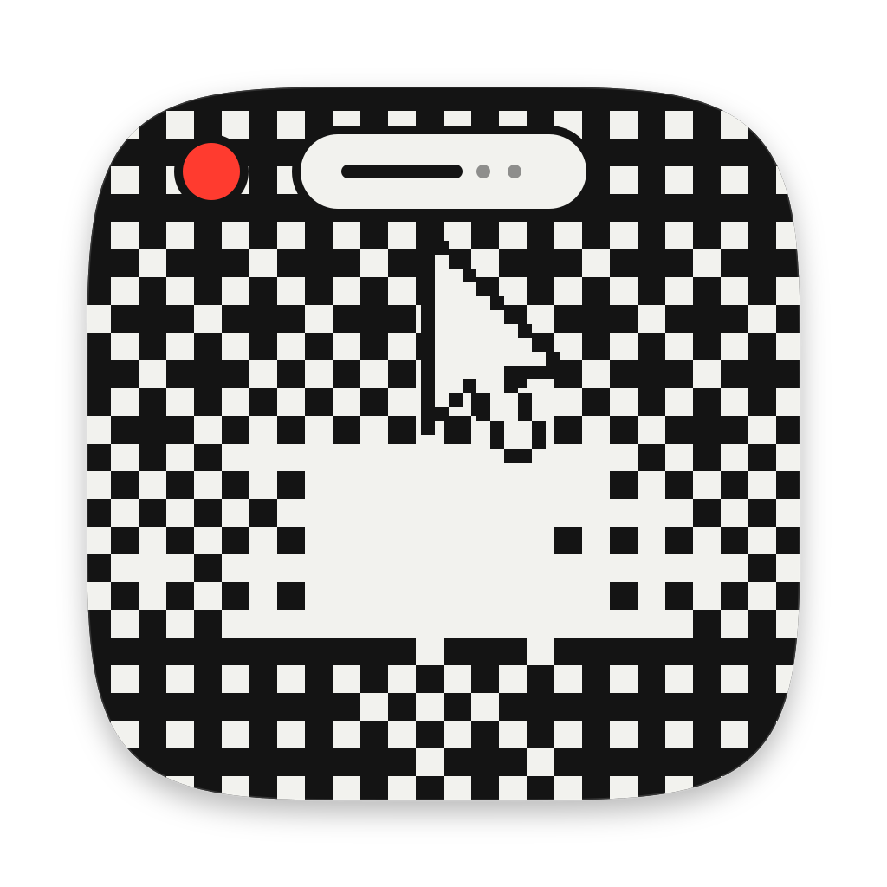
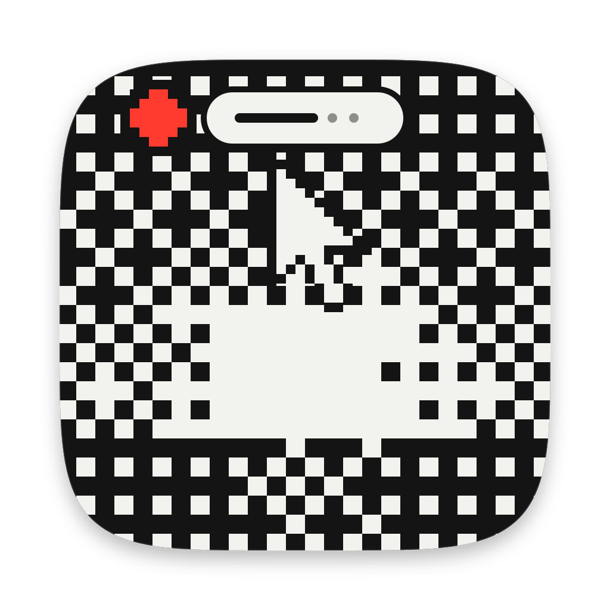

Installed
Installed now
Candidate
Spotlight candidate
Last 02
Rec, Top Left
Last 05
Pointer + Rec

Last 09
Pointer + Window Dot
01
Window Dot, Refined
02
Window Buttons
03
Small Pointer

04
All Pixels
05
Dot + Tabs, No Pointer
06
Rec Top Right, Refined
07
Pointer on the Dot
08
Bigger Dot